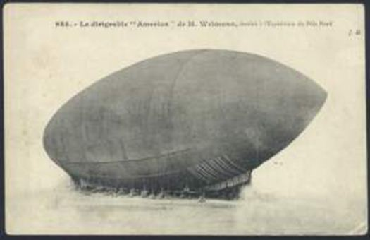
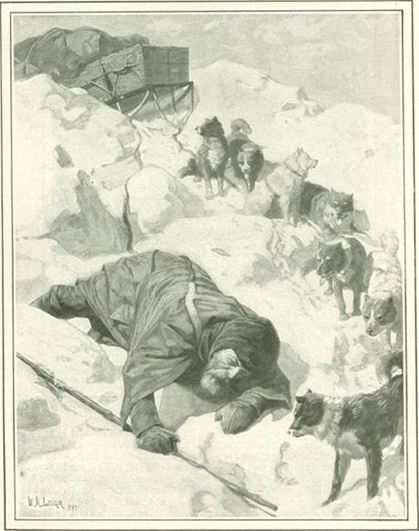
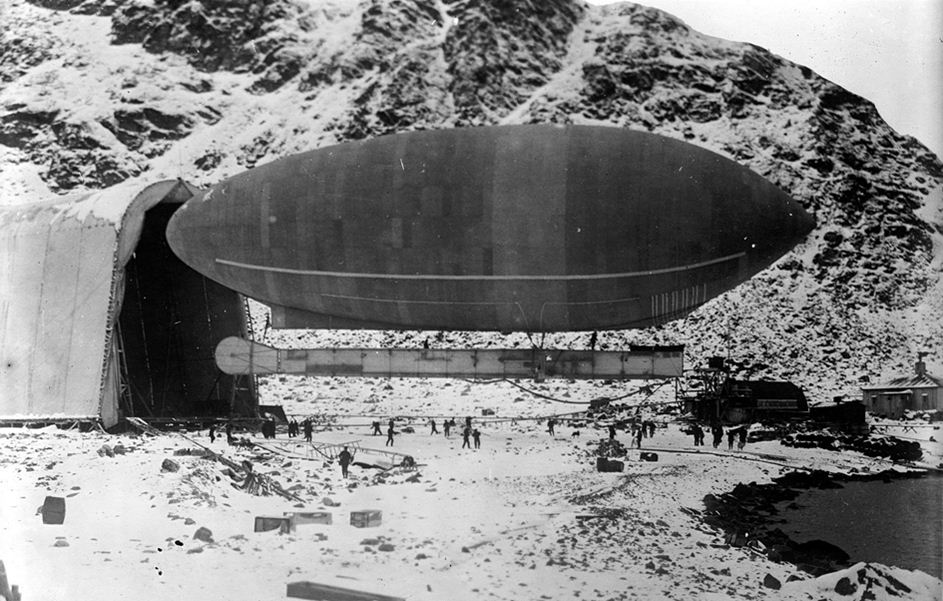
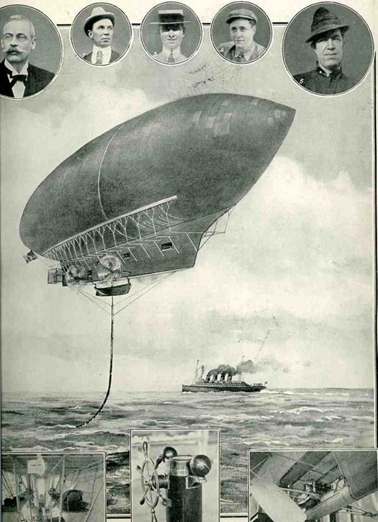
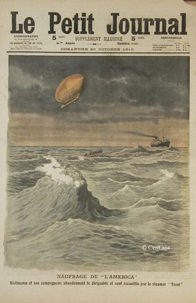
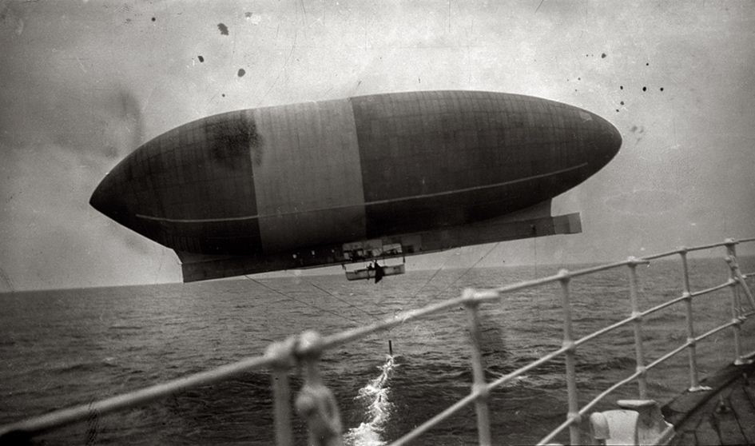

Les vols transatlantiques ou transpolaires sont devenus banals mais qui se souvient, qu’au début du siècle dernier, ce type de vol relevait de l’exploit ou de la fantaisie. Ainsi, le « Petit Journal » du 30 octobre 1910, s’interrogeait : « Sera-t-il un jour possible d'aller d'Europe en Amérique en aéroplane ?»
Et de développer son propos : « De cette enquête il résulte que les hommes compétents en la matière ne croient guère jusqu'ici le projet réalisable.
La difficulté principale signalée par eux consiste dans la difficulté d'organiser le ravitaillement en combustible. Delagrange proposait de tourner cette difficulté en établissant une station de navires au milieu de l'Atlantique. Les aéroplanes s'arrêteraient à moitié route, afin de renouveler leur provision de combustible. « De cette façon, disait-il, la machine n'aurait plus à transporter que moitié moins de pétrole et le problème serait résolu. »
C’est dans ce contexte que le samedi 15 octobre 1910, l’aéronaute Walter Wellman se lance dans une entreprise qu’il avait en tête depuis quelque temps : à savoir relier l’Amérique et l’Europe en dirigeable, dans une traversée de l’Atlantique au départ d’Atlantic City, dans le New Jersey….
Walter Wellman (1858-1934)Walter Wellman est un homme de presse américain qui fonda à 21 ans le journal « Cincinnati Evening Post ». De 1884 à 1911, il est le correspondant à Washington et le chroniqueur politique du « Chicago Herald » et de son successeur le « Record Herald ». En parallèle, sa passion pour l’exploration l’a conduit à mener 2 expéditions au sol pour atteindre le Pôle nord, 3 autres pour retrouver le lieu de débarquement de Christophe Colomb sur l’île de Watling (Bahamas) et une tentative d’atteinte du pôle Nord à bord d’un dirigeable en 1906.
L’appareil, baptisé « America » était long de 56 m, un diamètre de 16 m, un volume de 6.350 m3 avec un poids total de 7 t pour une autonomie de 25 jours. L’enveloppe, supérieure à celles connues à l’époque, était composée de 3 couches de tissu imperméable, dont 2 en coton et 1 en soie, chacune avec sa couche caoutchoutée. Les 3 couches étaient consolidées en une seule toile d’une grande résistance élastique supportant 2.800 kg/m2. La dernière couche de caoutchouc, à l’extérieur, servait à éviter la formation d’humidité et de glace.
Avec cette toile, la perte d’hydrogène n’était que de 90 kg par jour. Ce dirigeable avait été conçu et fabriqué par les Etablissements de construction aéronautique de Paris de Louis Godard. Etablissements qui avaient déjà construit deux autres gros dirigeables, les Belgique 1 et 2. En septembre 1907, Wellman décide de faire un court essai de vol de 15 miles. Le 2 septembre, l’équipage quitte l’île des Danois, mais « l’America » se perd presque immédiatement dans le brouillard. Après 3 h de vol, un atterrissage d’urgence est pratiqué sur un glacier, où l’équipage attend 2 jours avant d’être récupéré. Maigre consolation : c’est la 1re fois qu’un dirigeable motorisé vole en Arctique. L’expédition est à nouveau repoussée d’une année !
Trois ans après la date initiale, le 15 août 1909, c’est la dernière tentative de Wellman vers le Pôle nord, avec le 2e envol de « l’America » du Spitzberg. Les 50 premiers kilomètres sont franchis sans incident. Puis, brutalement, l’équilibreur de 550 kg se rompt. L’aéronat allégé bondit dans les airs. Wellman et les 3 hommes parviennent à reprendre le contrôle de « l’America » en lâchant de l’hydrogène. Ils font tout de suite demi-tour. Puis ils lancent une amarre à un navire et se font remorquer jusqu’à l’île des Danois. Leur vol n’a duré qu’une heure. A terre hélas, les déceptions ne sont pas terminées. Quand l’équipage tente d’amarrer « l’America » au sol, le dirigeable s’échappe, monte à 2.000 m et explose.
Donc, Wellman prend son envol, ce samedi 15 octobre dans la matinée, aux alentours de 8 h 30, prenant la direction du Vieux Continent. Le nouvel « America » avait 70 mètres de long, un peu plus de 16 mètres de diamètre, et cubait 10.000 mètres. Gonflé à l'hydrogène, il pouvait soulever un poids de près de 12.000 kilos. L'enveloppe, faite de deux surfaces de soie et d'une de tissu caoutchouté, pesait un peu plus de deux tonnes. Le ballon était du type non rigide, mais gardait une forme constante par suite de son attache à la longue nacelle en tubes d'acier, de 45 mètres de long, et d'un poids total 2,250 kilos. Cette nacelle, suspendue à des câbles d'acier, était divisée en sept compartiments. Le téléphone y était installé entre le pont et la chambre des moteurs, ainsi que l'électricité. Et, bien sûr, il s’agissait d’un Godard…
L’équipage est constitué, outre Wellman, de 5 hommes Melvin Vaniman (Ingénieur) Murray Simon (Navigateur), J.-R. Irwin (Opérateur télégraphiste) deux mécaniciens et un chat noir ! La manœuvre du dirigeable était assurée par quatre hommes, l'un au gouvernail, deux autres aux machines, le quatrième au télégraphe. Les perturbations météorologiques vont forcer Wellman a abandonné. Selon le plan de vol prévu ils devaient rejoindre l’Europe partant d’Atlantic City en 6 à 8 jours. Mais à cause d’une tempête, ils sont forcés d’appeler, à leur secours, un bâtiment de la « Royal Mail Steam Packet Company », le « Trent » :
« C’est à cinq heures du matin que nous avons aperçu le dirigeable America. Il était en détresse et nous signala, en employant le code Morse, qu'il avait besoin de secours. Après trois heures de manœuvres, nous sommes parvenus à prendre à notre bord, Wellman, tous ses compagnons et leur chat porte-bonheur. Tous sont maintenant en sureté et en bonne santé. Nous avons abandonné l'America par 35°13 de latitude ouest et de 68°18 de longitude nord. »
La position signalée par cette dépêche est à 150 milles du cap Hatteras. Malgré cet échec Wellman pourra se targuer d’avoir battu tous les records de distance et de durée : en 69 heures de vol, il aura couvert environ 850 milles… !